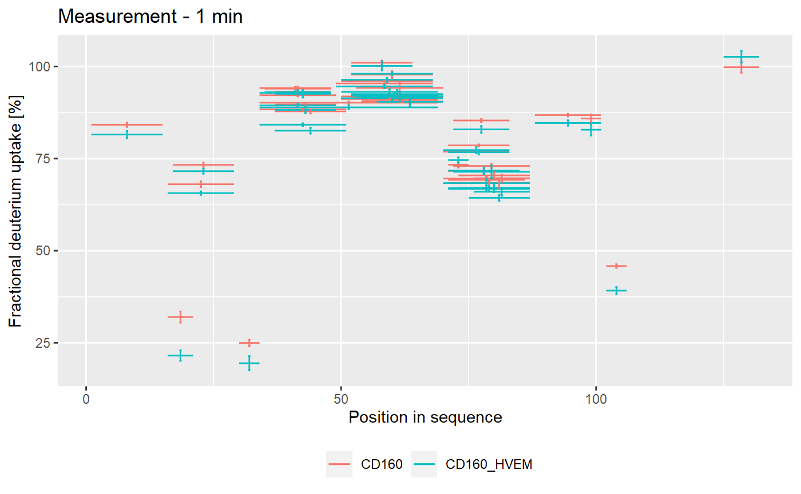
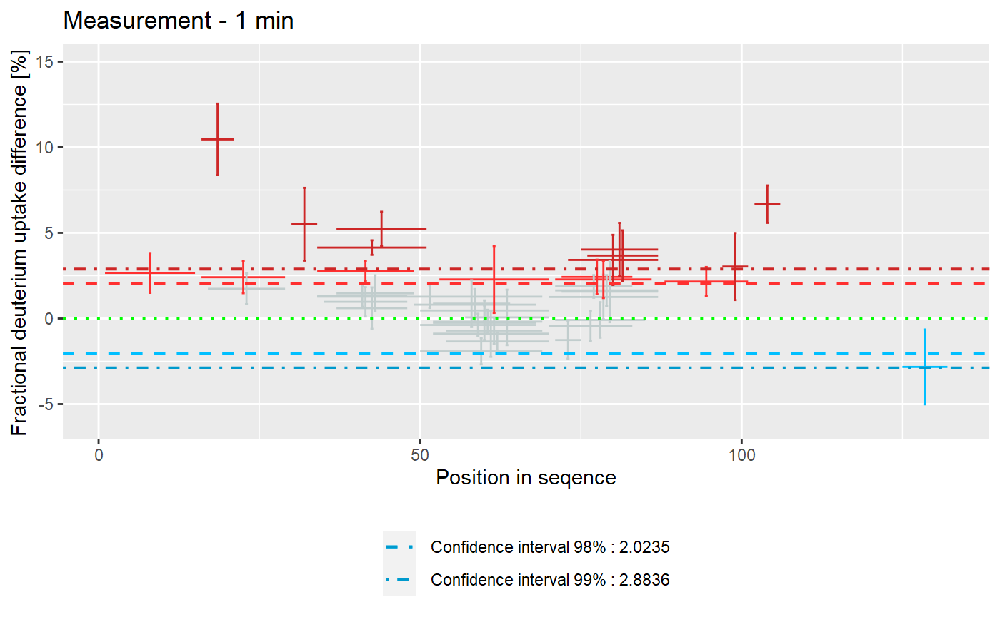
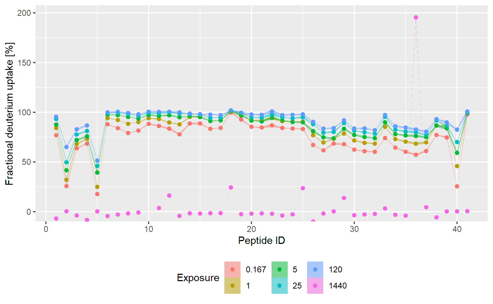
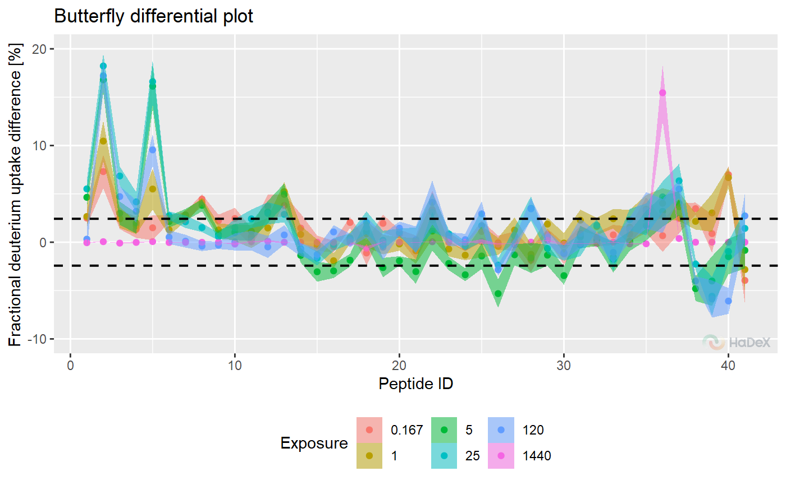
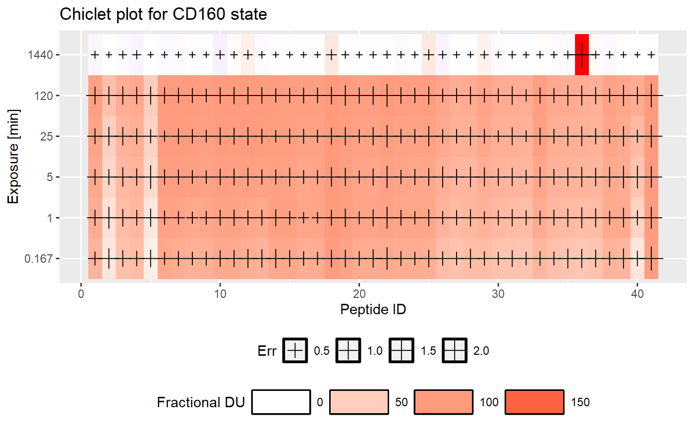
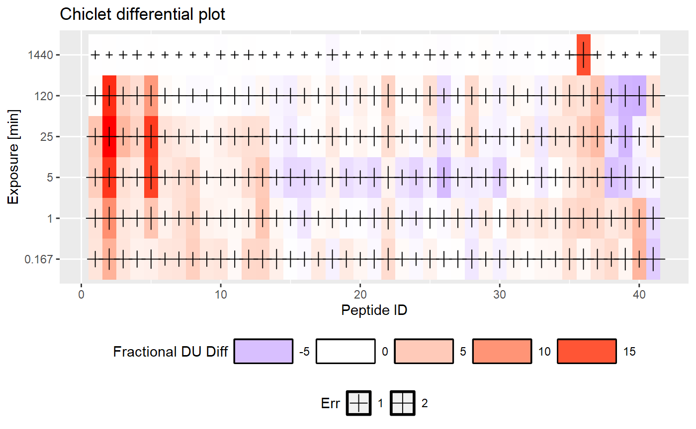
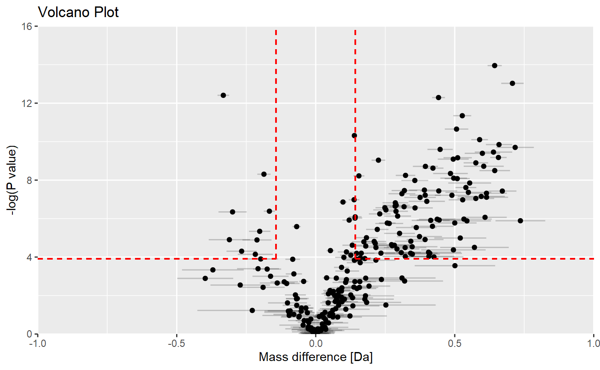
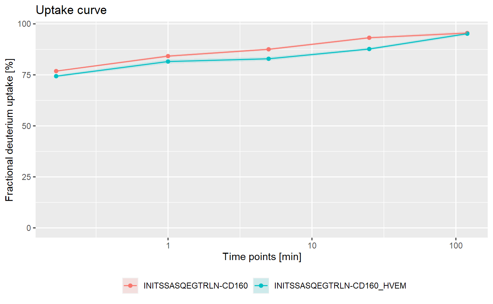

visualization.Rmd## [1] ""Data visualization is an essential part of the data analysis as it allows to interpret the results.
In this article, we present methods of data visualization available in the package. Some of the features can be unchecked in the GUI, but we focus on the plots with the maximum of elements. We use already processed data (calculated deuterium uptake, not measured masses). For more information on how the results are calculated see the other articles in the documentation.
All of the examples of the plot use the example file KD_180110_CD160_HVEM.csv. The examples show the deuterium uptake values, the different forms of presented data are described under each plot. HaDeX package allows to produce a data frame with presented data for each plot.
The comparison plot shows deuterium uptake of the peptides in a given time point, with information on the length of the peptide and its position in the protein sequence. It allows comparing the results of different biological states.
Example In the comparison plot below, we see the fractional deuterium uptake for two states CD160 and CD160_HVEM, of protein db_CD160. The values are calculated for the time point 1 min. The length of the segments represents the length of the peptide and the position in the protein sequence. The error bars indicate the uncertainty of the measurement.

Pros The peptide deuterium uptake of each peptide can be related to its position of the protein. The changes in a specific region of the protein are visible and how it changes between the biological state at the time of the measurement.
Cons The information of the changes in time is lost. Some regions may be hard to read due to the overlap of peptides.
Uncertainty The uncertainty of the deuterium uptake measurement is indicated by the error bars associated with each peptide.
Values The values on the plot can be presented as deuterium uptake (in Daltons) or fractional deuterium uptake (in percentage). The calculation of the deuterium uptake is done with respect to experimentally measured minimal/maximal exchange control or tabular values (MHP and Max Uptake).
Woods plot presents the deuterium uptake difference between two biological states for the peptides. The results are presented with respect to the length of the peptide and its position in the protein sequence for a given time point of the measurement. The statistical test (Houde et al., the confidence level is calculated based on the measurements in chosen time point of the measurement) is applied to determine the confidence limits values at the chosen level.
Example On the Woods plot below, we see fractional deuterium uptake difference between two biological states CD160 and CD160_HVEM for protein db_CD160. The confidence limits indicate which differences are statistically significant at levels 98% and 99%. There are regions that were protected in the second state, and regions deprotected. Also, in region 40-800, results for some peptides were not big enough to be significant.

Pros The peptide deuterium uptake difference between two biological states of each peptide can be related to its position of the protein. The changes in a specific region of the protein are visible. The confidence limits indicate if the result is statistically significant.
Cons The information of the changes in time is lost. Some regions may be hard to read due to the overlap of peptides.
Uncertainty The uncertainty of the deuterium uptake difference (uncertainty of the measurement combined and propagated) is indicated by the error bars associated with each peptide.
Values The values on the plot can be presented as deuterium uptake difference (in Daltons) or fractional deuterium uptake difference (in percentage). The calculation of the deuterium uptake difference is done with respect to experimentally measured minimal/maximal exchange control or tabular values (MHP and Max Uptake).
Butterfly plot presents the deuterium uptake for all peptides in a given state at different time points at once. Each time point of measurement is indicated by a different color. Peptides are identified by their ID (peptides are numbered arranged by the start position).
Example Below, on the butterfly plot, we see how the fractional deuterium uptake changes in time for state CD160 for protein db_CD160. We see the different exchange speed - for some peptides, the change is stable in time, and for some peptides, there is no visible change in time.

Pros Shows the changes of deuterium uptake in time and allows to see how the exchange goes.
Cons It shows the results only for one biological state. The information on the length of the peptide and the protein region is lost.
Uncertainty Uncertainty of the deuterium uptake (combined and propagated based on the chosen value) is shown as a ribbon or error bars.
Values The values on the plot can be presented as deuterium uptake (in Daltons) or fractional deuterium uptake (in percentage). The calculation of the deuterium uptake is done with respect to experimentally measured minimal/maximal exchange control or tabular values (MHP and Max Uptake).
Butterfly differential plot shows the deuterium uptake difference between two biological states in the form of a butterfly plot. It shows the results for a peptide ID (peptides are numbered arranged by the start position). The results are shown for different time points at once (time points of measurement are indicated by the color).
Example Below, we see how the fractional deuterium uptake difference between states CD160 and CD160_HVEM changes over time. We see that for some peptides, the difference is smaller with time - perhaps because of the back exchange.

Pros It shows the results for different time points of the measurement.
Cons The readability of the plot is very small due to small and overlapping values. There is no indication which changes are statistically significant. The information of peptide length and protein region is lost.
Uncertainty Uncertainty of the deuterium uptake difference (combined and propagated based on the chosen value) is shown as a ribbon or error bars.
Values The values on the plot can be presented as deuterium uptake difference (in Daltons) or fractional deuterium uptake difference (in percentage). The calculation of the deuterium uptake difference is done with respect to experimentally measured minimal/maximal exchange control or tabular values (MHP and Max Uptake).
Chiclet plot shows the fractional deuterium uptake in the form of a heatmap for the peptides in a given biological state. One tile indicates the peptide (identified by its ID - number arranged by the start position) in a time point of measurement. The color of the tile indicates the fractinal deuterium uptake (according to the legend below the plot).
Example

Pros The plot shows how the deuterium uptake changes over time.
Cons This plot shows the values only for one biological state. The values are indicated by colors, so the small changes between time points are difficult to notice. The information about peptide length and protein region is lost.
Uncertainty Uncertainty (combined and propagated) is shown as the cross symbols of each tile. The legend is placed under the plot.
Values The values on the plot can be presented as deuterium uptake (in Daltons) or fractional deuterium uptake (in percentage). The calculation of the deuterium uptake is done with respect to experimentally measured minimal/maximal exchange control or tabular values (MHP and Max Uptake).
Chiclet differential plot shows the deuterium uptake difference between two biological states in the form of a heatmap. One tile indicates the peptide (identified by its ID - number arranged by the start position) in a time point of measurement. The color of the tile indicates the deuterium uptake difference (according to the legend below the plot).
Example On the chiclet differential plot below, we see the fractional deuterium uptake difference between states CD160 and CD160_HVEM for protein db_CD160. We see that some peptides are protected (red), and some are deprotected (blue).

Pros The plot shows the results for different time points of the measurement.
Cons The values are indicated by colors, so the small changes between time points are difficult to notice. There is no indication if the values are statistically significant. If we choose not to show the insignificant values, that may be mistaken for no difference. The information on peptide length and protein region is lost.
Uncertainty Uncertainty (combined and propagated) is shown as the cross symbols of each tile. The legend is placed under the plot.
Values The values on the plot can be presented as deuterium uptake difference (in Daltons) or fractional deuterium uptake difference (in percentage). The calculation of the deuterium uptake difference is done with respect to experimentally measured minimal/maximal exchange control or tabular values (MHP and Max Uptake).
The volcano plot shows the deuterium uptake difference for two biological states for peptide and its p-value for double testing on statistical significance (Weis et al.). On the x-axis, there is a deuterium uptake difference with its uncertainty (combined and propagated). On the y-axis, there is a P-value calculated for each peptide in a specifc time point of a measurement as a un-paired t-test on given significance level (on mass measurement from the replicates to indicate if the measured mean is significantly different between two states, as the deuterium uptake difference between states can be rewritten as
\[\Delta D = D_{A} - D_{B} = m_{t, A} - m_{0} - (m_{t, B} - m_{0}) = m_{t, A} - m_{t, B} \]
for states A and B. The values of deuterium uptake difference from all time points are shown on the plot.
The dotted red lines indicate confidence limits for the values. The horizontal line indicates the confidence limit based on chosen confidence level to give a threshold on a P-value. The vertical lines indicate the confidence limit from Houde test for all time points and indicate a threshold on deuterium uptake difference. The statistically significant points are in the top left and right corners of the plot.
Example On the volcano plot below, we see the results for deuterium uptake difference between states CD160 and CD160_HVEM for protein db_CD160 in all time points.
## Warning in st_1 == st_2: długość dłuszego obiektu nie jest wielokrotnością
## długości krótszego obiektu
## Warning in st_1 == st_2: długość dłuszego obiektu nie jest wielokrotnością
## długości krótszego obiektu
## Warning in st_1 == st_2: długość dłuszego obiektu nie jest wielokrotnością
## długości krótszego obiektu
## Warning in st_1 == st_2: długość dłuszego obiektu nie jest wielokrotnością
## długości krótszego obiektu
## Warning in st_1 == st_2: długość dłuszego obiektu nie jest wielokrotnością
## długości krótszego obiektu
## Warning in st_1 == st_2: długość dłuszego obiektu nie jest wielokrotnością
## długości krótszego obiektu
## Warning in st_1 == st_2: długość dłuszego obiektu nie jest wielokrotnością
## długości krótszego obiektu
## Warning in st_1 == st_2: długość dłuszego obiektu nie jest wielokrotnością
## długości krótszego obiektu
Pros This plot allows to distinguish significant results easily and uses double testing.
Cons It is difficult to recognize the significant peptides and the time point of the measurement. If the plot is reactive, tooltips help to see additional information. For the not reactive plot (e.q. in articles), it is not possible.
Uncertainty The uncertainty of the deuterium uptake difference (combined and propagated) is shown as the error bars in the deuterium uptake difference dimension.
Values This plot shows only deuterium uptake difference [Da].
Uptake curves show the changes in exchange in time for a specific peptide for its state.
Example On the uptake curve below, we see how the exchange goes for peptide INITSSASQEGTRLN in states CD160 and CD160_HVEM for protein db_CD160. We can see that the fractional deuterium uptake in state CD160_HVEM is smaller than in state CD160.
## Scale for 'x' is already present. Adding another scale for 'x', which will
## replace the existing scale.
Pros The plot shows the differences in deuterium uptake between two states in the time course. The back-exchange phenomenon is visible in this plot.
Cons The plot shows results for only one peptide. Adding more peptides is possible but affects the readability of the plot.
Uncertainty The uncertainty (combined and propagated) is shown as a ribbon.
Values The values on the plot can be presented as deuterium uptake (in Daltons) or fractional deuterium uptake (in percentage). The calculation of the deuterium uptake is done with respect to experimentally measured minimal/maximal exchange control or tabular values (MHP and Max Uptake).
Below we compare the aspects of the plots.
| types | time.course | length.of.the.peptide | uncertainty | all.peptides | different.states |
|---|---|---|---|---|---|
| comparison | FALSE | TRUE | TRUE | TRUE | TRUE |
| Woods (differential) | FALSE | TRUE | TRUE | TRUE | TRUE |
| butterfly | TRUE | FALSE | TRUE | TRUE | FALSE |
| butterfly differential | TRUE | FALSE | TRUE | TRUE | TRUE |
| volcano | TRUE | FALSE | TRUE | TRUE | TRUE |
| chiclet | TRUE | FALSE | TRUE | TRUE | FALSE |
| chiclet differential | TRUE | FALSE | TRUE | TRUE | TRUE |
| uptake curve | TRUE | FALSE | TRUE | FALSE | TRUE |
The columns indicate: